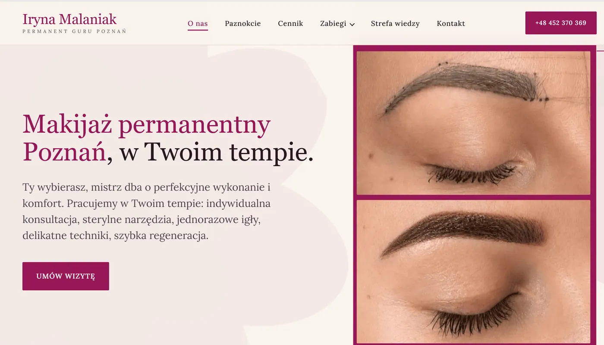
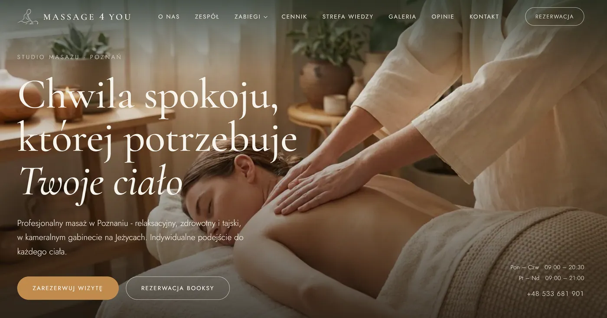
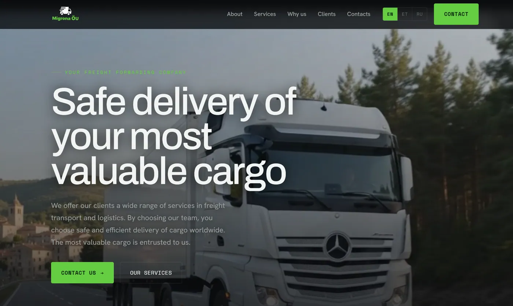

Шість бізнесів. Шість систем зростання, а не шість сайтів.
Кожен проєкт тут починався однаково: сервісний бізнес, добрий у своїй справі й невидимий у пошуку. Змінювався ніколи не сам дизайн. Змінювався порядок, у якому будувалися шари.

Кожна процедура як окремий пошуковий ринок: брови, губи, стрілки, видалення, ламінування й реконструкція отримують ту сторінку, якої справді просить пошук, замість одного спільного прайсу.

Глибоке меню - розслаблювальний, лікувальний, тайський, Kobido, лімфодренаж, апаратні процедури - упорядковане так, щоб людина, яка прийшла вперше, знайшла ту саму процедуру без читання всього списку.

У тату портфоліо is сторінкою продажу. Роботи показані за стилем - fine-line, орнаментал, blackwork, мікрореалізм - щоб відвідувач упізнав свою ідею ще до форми запису.

Одна сертифікована масажистка з десятьма роками за плечима проти мереж. Сайт побудований навколо двох речей, яких мережа не скопіює: конкретного переліку технік і людини, яка їх виконує.

Виняток, який доводить, що метод - не трюк для індустрії краси. Ні клієнтів з вулиці, ні Google Бізнес-профілю для оптимізації, а покупець порівнює чотирьох експедиторів за надійністю, перш ніж написати бодай одному. Ті самі вісім шарів, зовсім інший порядок складання: автоперевезення, збірні вантажі, негабарит, перевезення авто й митне оформлення, трьома мовами, з хабами в Роттердамі, Магдебурзі, Вільнюсі та Києві.

Виняток, який доводить, що метод - не трюк для індустрії краси. Ні клієнтів з вулиці, ні Google Бізнес-профілю для оптимізації, а покупець порівнює чотирьох експедиторів за надійністю, перш ніж написати бодай одному. Ті самі вісім шарів, зовсім інший порядок складання: автоперевезення, збірні вантажі, негабарит, перевезення авто й митне оформлення, трьома мовами, з хабами в Роттердамі, Магдебурзі, Вільнюсі та Києві.
Різні галузі. Той самий порядок дій.
Сторінка зʼявляється після пошуку
Жодна карта сайту не малюється, доки я не знаю, що люди насправді вводять. Структура сайту - це структура попиту, і саме тому меню послуг так сильно різняться між цими роботами.
Питання про довіру належать сторінці
Чи боляче, як довго тримається, що буде, якщо щось піде не так, чи застрахований вантаж. Питання з приватних повідомлень і дзвінків отримують відповідь перед формою, а не після неї.
Мова - це ринок, а не перемикач
Польська, англійська, чеська, естонська, російська, українська. Кожна мовна версія будується під те, як шукає саме ця аудиторія, а не перекладається машинно поверх першої.
Побудуймо вашу систему зростання.
Розкажіть, чим займається ваш бізнес і де його мають знаходити. Я скажу, якого шару бракує і скільки коштувало б його побудувати. Якщо сайт уже є, починаємо з безкоштовного SEO-аудиту.